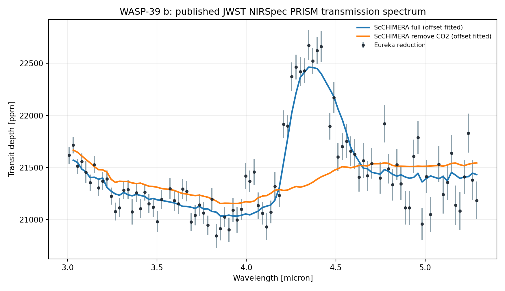
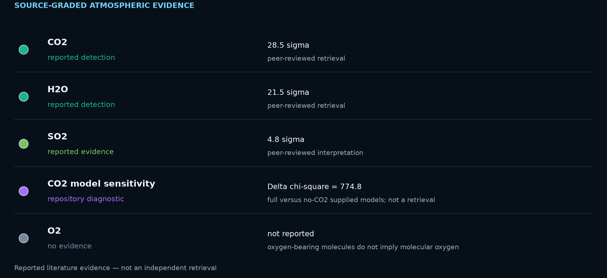

Data source notes
SHA-256, LF-normalised text
eb9ecc5910c6222935879a13920e21edb4a3ee880da6510187a8810c22c55ba8Browse 17 versioned evidence files. Table previews simply display stored rows. Consult the project report for the source, processing steps, and inference assumptions.


eb9ecc5910c6222935879a13920e21edb4a3ee880da6510187a8810c22c55ba818ab790d131d28f4ad97d5a19dc3c5787ecc12269685823bbfd0d38dfe8619a8| species | status | evidence | basis | source_label | source_url |
|---|---|---|---|---|---|
| CO2 | reported detection | 28.5 sigma | peer-reviewed retrieval | Alderson et al. 2023, Nature | https://doi.org/10.1038/s41586-022-05591-3 |
| H2O | reported detection | 21.5 sigma | peer-reviewed retrieval | Alderson et al. 2023, Nature | https://doi.org/10.1038/s41586-022-05591-3 |
| SO2 | reported evidence | 4.8 sigma | peer-reviewed interpretation | Alderson et al. 2023, Nature | https://doi.org/10.1038/s41586-022-05591-3 |
| CO2 model sensitivity | repository diagnostic | Delta chi-square = 774.8 | full versus no-CO2 supplied models; not a retrieval | Alderson et al. 2023, Nature | https://doi.org/10.1038/s41586-022-05591-3 |
47ab85812811017ef57a272b4072491c2083a18a1eac8d7fd3d6580e72c5deb6| pl_name | hostname | ra | dec | pl_orbper | pl_tranmid | pl_trandur |
|---|---|---|---|---|---|---|
| WASP-39 b | WASP-39 | 217.3266477 | -3.4444994 | 4.0552941 | 2455342.96913 | 2.8032 |
afea2d03c59931e60b1e6c01cd076d327322abe84d3fd5d08c66a89b1192eb22dc75775fde0187da7f058354635a90529e59128ecbfe683112024ad3e0c04ce845d014400577a5208f9f699a7811c0cc95aeb2c4f308583db9e90297f35cca1d7d41ab15efb4350ecce93f7e646d86cf4bd0fdab559f567d8e3dac51374ff004| quantity | value | unit |
|---|---|---|
| sector | 51 | TESS sector |
| period_days | 4.0552941 | days; NASA Exoplanet Archive |
| published_duration_hours | 2.8032 | hours; NASA Exoplanet Archive |
| a_over_rstar | 11.0561714164 | fixed from saved a and stellar radius |
c35a7ed8365d9b29462395d6d351f301eb43485d1cb32835ec14cbd55f8098ee| chi2 | comparison | dof | mean | n | offset | p |
|---|---|---|---|---|---|---|
| 1089.6022214656668 | weighted flat | 93 | 21379.77458524741 | 94 | 1.0580301644496441e-169 | |
| 179.18637534896123 | ScCHIMERA full + fitted vertical offset | 92 | 93 | -62.71232409044804 | 1.4413364529151033e-07 | |
| 953.5895298883139 | ScCHIMERA remove CO2 + fitted vertical offset | 92 | 93 | 55.96471200679537 | 2.634626641694799e-143 |
15fd4749be36c614f663a3cf00bb4a97ff068fa37d507cbb4c36afd5f32b07b0| sector | filename | transit_events | n_points | transit_supported | delta_bic | timing_shift_hours |
|---|---|---|---|---|---|---|
| 51 | tess2022112184951-s0051-0000000181949561-0223-s_lc.fits | 4 | 1572 | True | 12394.69037 | -0.3603564129 |
64f06ec98ab94b4a16929ab66d14fe17cc653723bc2f2c1e6e666923bdfc6dea| wavelength_micron | bin_width_micron | depth_ppm | error_ppm | full_model_with_offset_ppm | no_co2_model_with_offset_ppm | delta_chi2_contribution |
|---|---|---|---|---|---|---|
| 3.032 | 0.012 | 21716.45249 | 79.69166994 | 21571.3497 | 21668.03859 | -2.946246935 |
| 3.056 | 0.012 | 21512.85644 | 70.52457662 | 21549.0229 | 21646.82158 | 3.345314927 |
| 3.0795 | 0.0115 | 21558.06306 | 76.41052997 | 21486.31758 | 21611.97947 | -0.3837298647 |
| 3.1025 | 0.0115 | 21456.27903 | 103.4909711 | 21458.43543 | 21578.18933 | 1.387202658 |
6e84f0e2437adfafe2d9f6454f39691882a573db90243a9b78b29efacc73c6cd| requested_width_micron | center_micron | deleted_min_micron | deleted_max_micron | n_deleted | n_retained | delta_chi2_no_co2_minus_full |
|---|---|---|---|---|---|---|
| 0.1 | 3.032 | 3.032 | 3.0795 | 3 | 90 | 774.382168145 |
| 0.1 | 3.056 | 3.032 | 3.1025 | 4 | 89 | 772.877038777 |
| 0.1 | 3.0795 | 3.032 | 3.126 | 5 | 88 | 766.655720822 |
| 0.1 | 3.1025 | 3.056 | 3.1495 | 5 | 88 | 765.774759213 |
3c4b3ceb4d1673e8fe25d3cfc57b44929a777c95c56ada77ac829f6f769cbde3| correlated_amplitude_over_median_error | correlation_length_micron | n_bins | covariance_condition_number | covariance_min_eigenvalue | full_chi2 | no_co2_chi2 |
|---|---|---|---|---|---|---|
| 0.0 | 0.05 | 93 | 7.34752673647 | 4973.71590711 | 179.186375349 | 953.589529888 |
| 0.0 | 0.1 | 93 | 7.34752673647 | 4973.71590711 | 179.186375349 | 953.589529888 |
| 0.0 | 0.25 | 93 | 7.34752673647 | 4973.71590711 | 179.186375349 | 953.589529888 |
| 0.0 | 0.5 | 93 | 7.34752673647 | 4973.71590711 | 179.186375349 | 953.589529888 |
1d32fd531071e878264f8d6dc023d127154c889423ba1800f72cedc3ae7500fbca36d671579f2c80af3500f72b711a37763bc6834336e494fdeec040054f92c519a288681397d8bb1ae0df02c5eb504b7432fe7a03795fcd3a37c5c86233e5d12b840e204e37f1d3a468af440d4b50fe936b67a3675cdec68a8c76b7ca93e8c6bfee55fa57ba64ea50260b2286f47d4a285b876ae6187c7c1cdca47e6aa564d5SHA-256 values verify the stored files. They do not independently validate the scientific analysis. Rebuild this page with python scripts/evidence_catalog.py followed by python scripts/render_evidence_page.py.